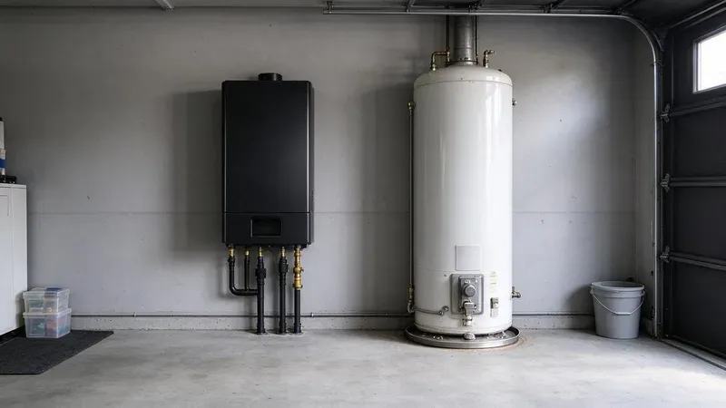

How a Tank Water Heater Works
A standard tank heater keeps 40 or 50 gallons hot around the clock. The design is simple, replacement is cheap, and a swap usually takes a few hours. The downside is standby loss. The tank loses heat through its walls all day, which means the heater fires even when no one is running water.
Scale buildup shortens water heater life and clogs aerators, which is why water softeners are so common in the state.
Tanks typically last 8 to 12 years. The anode rod inside sacrifices itself to slow corrosion, and once it is gone the steel tank starts to rust from the inside. A new anode every three to five years can stretch the tank's life. Few homeowners ever do it.
How Tankless Units Work
A tankless heater fires only on demand. Water passes through a heat exchanger and comes out hot in a few seconds, with no stored water to keep warm. Endless hot water is the main draw for most people. The limit is flow, since a unit can only raise the temperature on so many gallons per minute.
Incoming water temperature sets how much hot water a tankless unit can deliver. In winter, colder incoming water can drop a 9 gallon per minute unit to 5 or 6. That is enough for one shower and a dishwasher, but maybe not two showers and a washer. Size for winter.
Cost and Installation
Swapping a tank is mostly a like-for-like job. Tankless installs usually cost more because the gas line and venting both change, and sometimes the electrical does too. A typical gas tankless unit draws 150,000 to 199,000 BTUs, more than many half-inch gas lines can carry. Upsizing to 3/4 inch is common.
Venting changes too. A condensing unit vents through PVC, and a non-condensing one needs stainless vent. Our installers at CNV Plumbing check the gas line size and the vent route before we quote anything, so there are no surprises on install day. Condensing units also need a drain for the acidic condensate, usually through a neutralizer.
Water heater replacements, new fixtures and water or sewer line work typically require a permit and inspection.
Either type needs a temperature and pressure relief valve piped to a safe spot. With a pressure reducing valve on the main, a tank heater usually needs a thermal expansion tank to go with it. Both kinds of install normally require a permit. We pull them.
Which One Fits Your Minnesota Home
A tank still makes sense for plenty of houses. For a two-bathroom house on a tight budget, a new tank of the same size is usually the simple answer. Tankless earns its cost in houses that already run out of hot water, or where the tank takes up a closet you would like to reclaim. Space is a real factor.
Tankless units often run 20 years with yearly maintenance, about twice what a tank lasts. On hard water, that maintenance means flushing the heat exchanger with a pump and vinegar or descaler once a year. Skip it and the unit will throw error codes within a few years. Gas units also need a clean air intake.
Getting a Straight Answer
Bring us the age of your current heater, the number of people in the house and whether anyone has ever run out of hot water mid-shower. Our plumber will check the gas line and the vent path, then price both options side by side. CNV Plumbing installs both types across Minnesota, and you can reach the office at (612) 712-9569. Most tank swaps are done the same day.
Need a licensed plumber in Minnesota?
CNV Plumbing answers 24/7 and offers same-day service across Minnesota.